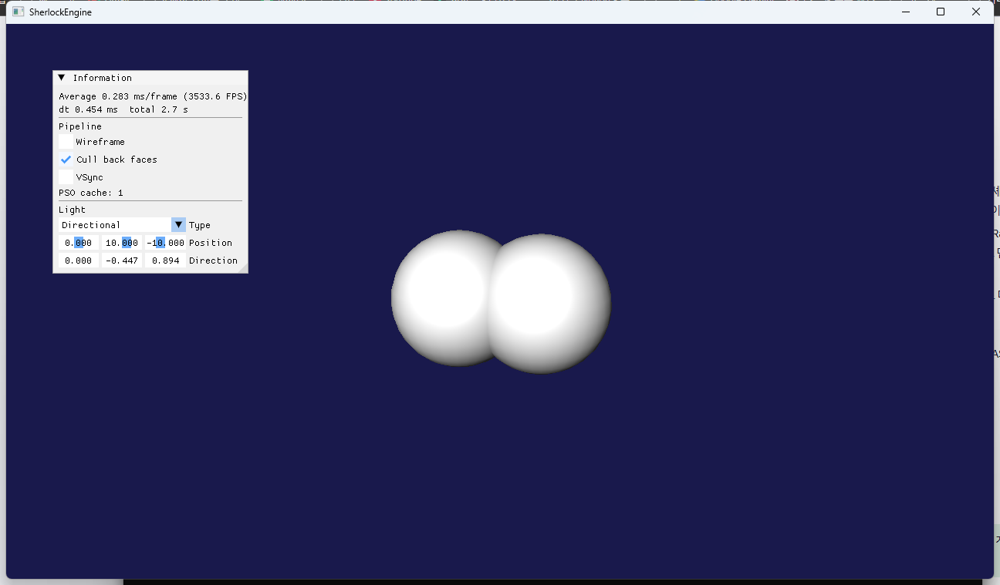
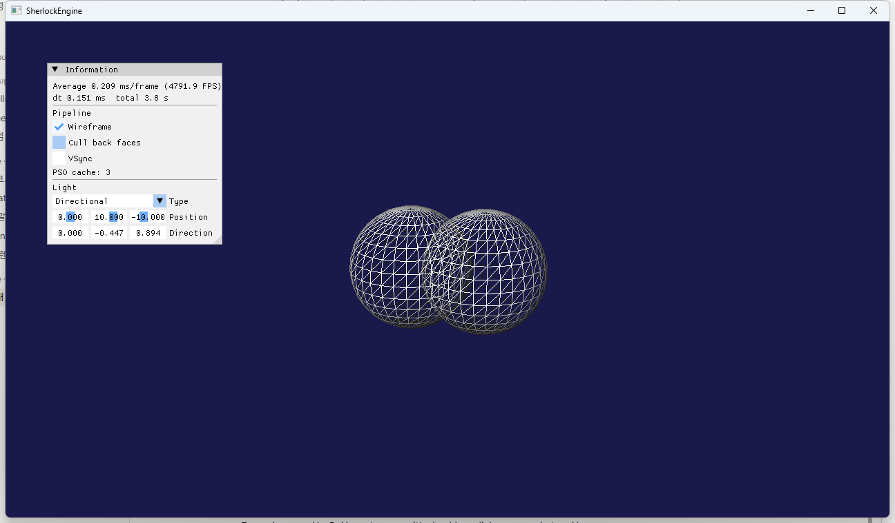

1단계 · 깊이 버퍼와 PSO 에뮬레이션
깊이 버퍼는 2026-09-10에 끝났고, 이 문서는 남아 있던 본체인 PSO(Pipeline State Object) 에뮬레이션을 다룹니다. 원문 D22가 "1단계에서 바로 시작해야 이후 모든 단계가 그 위에 쌓인다"고 한 항목입니다. D3D12의 D3D12_GRAPHICS_PIPELINE_STATE_DESC를 본뜬 API 중립 Desc, 그것으로 D3D11 상태 객체 다섯 개를 만들어 한 번에 바인딩하는 PipelineState, Desc 해시로 찾는 캐시, 그리고 래스터라이저 상태 4개와 ShaderUpdate를 PSO로 흡수한 과정을 씁니다.
파이프라인 상태를 값 타입 Desc 하나로 기술하고, 그 Desc의 해시로 캐시된 PipelineState를 얻어 Bind() 한 번으로 설정합니다. Renderer는 "지금 설정에 맞는 Desc"를 매 프레임 만들어 캐시에 물어볼 뿐이고, RSSetState·VSSetShader·OMSetDepthStencilState 같은 호출은 Graphics/D3D11/PipelineState.cpp 한 파일에만 남았습니다. D3D11에서는 성능 이득이 없습니다. 이득은 8단계에서 같은 Desc가 D3D12_GRAPHICS_PIPELINE_STATE_DESC로 변환될 때 호출 코드가 한 줄도 바뀌지 않는다는 것입니다.
1.요약
| 구성 요소 | 파일 | 역할 |
|---|---|---|
| PipelineStateDesc | Graphics/PipelineTypes.h/.cpp | API 중립 기술. 셰이더 핸들, 정점 레이아웃, Rasterizer/DepthStencil/Blend Desc, 토폴로지, RTV/DSV 포맷, 샘플 수. Hash()와 operator== |
| Handle<Tag> | Graphics/Handle.h | {index, generation} 값 타입. ShaderHandle, PipelineHandle(Buffer/Texture 핸들은 선언만 해 두고 3단계부터 사용) |
| VertexTypes.h | Graphics/ | VERTEX 구조체와 offsetof 기반 GetVertexLayoutPCN() |
| D3D11Convert | Graphics/D3D11/ | 열거형·Desc → D3D11 타입 변환. 대응이 없으면 로그 + 안전한 기본값 |
| PipelineState | Graphics/D3D11/ | Desc → InputLayout·VS·PS·RasterizerState·DepthStencilState·BlendState. Bind(context) |
| PipelineStateCache | Graphics/D3D11/ | unordered_map<Desc, index> + vector<unique_ptr<PipelineState>> |
| Device | Graphics/D3D11/ | CreateShader(바이트코드) → ShaderHandle, CreatePipeline(Desc) → PipelineHandle, BindPipeline, VSync 토글, Debug Layer 메시지 덤프 |
2.D3D11의 상태 모델과 D3D12의 PSO
2.1 왜 D3D12 의미론으로 설계하는가
D3D11은 파이프라인 상태를 굵은 덩어리 몇 개로 나눕니다. ID3D11RasterizerState, ID3D11DepthStencilState, ID3D11BlendState를 각각 만들고 RSSetState, OMSetDepthStencilState, OMSetBlendState로 따로 설정하며, 셰이더와 입력 레이아웃과 토폴로지도 각자의 Set*이 있습니다. Microsoft의 D3D12 문서는 이 설계의 문제를 이렇게 설명합니다. 오늘날의 하드웨어에서는 블렌드 상태가 래스터 상태에 의존하는 식으로 상태 사이에 종속성이 있어서, 드라이버는 드로우 직전에야 실제 하드웨어 상태를 조합할 수 있고 그 비용을 런타임에 치른다는 것입니다[1]. D3D12의 PSO는 그 조합을 생성 시점으로 옮깁니다. 셰이더 바이트코드부터 렌더 타깃 포맷까지 전부를 하나의 Desc로 받아 불변 객체를 만들고, 드로우 때는 SetPipelineState 하나로 바꿉니다.
원문 9절의 설계 원칙 "D3D12 의미론으로 설계하고 D3D11로 구현한다"가 여기서 처음 실전에 적용됩니다. D3D11 위에서 PSO 흉내를 내는 것은 성능에 아무 이득이 없고 코드는 늘어납니다. 반대로 D3D11식 개별 상태를 인터페이스로 삼고 D3D12에서 흉내 내면, D3D12 백엔드는 RSSetState가 불릴 때마다 PSO를 새로 조합하거나 캐시를 뒤져야 해서 느리고 구조도 뒤틀립니다. 두 API를 모두 담을 인터페이스는 더 명시적인 쪽을 따라야 하고, 명시적인 쪽은 D3D12입니다.
2.2 PSO에 들어가는 것과 들어가지 않는 것
D3D12 문서의 두 표[1]가 경계를 정확히 그어 줍니다. 이 경계를 그대로 따랐습니다.
| PSO 안 (불변, Desc로 기술) | PSO 밖 (동적 상태, 커맨드리스트 메서드) |
|---|---|
| VS/PS(/GS/HS/DS) 바이트코드 | 정점·인덱스 버퍼 바인딩 (IASetVertexBuffers, IASetIndexBuffer) |
| 입력 정점 포맷 (InputLayout) | 렌더 타깃 바인딩 (OMSetRenderTargets) |
| 프리미티브 토폴로지 타입 | 토폴로지 순서·인접성 (IASetPrimitiveTopology) — D3D11은 하나로 합쳐져 있어 PSO 쪽에 둠 |
| Blend / Rasterizer / DepthStencil 상태 | 뷰포트, 시저 사각형 |
| RTV 포맷 배열과 개수, DSV 포맷, 샘플 수 | 블렌드 팩터, 스텐실 참조값 |
| 루트 시그니처 (4단계 BindingLayout) | 리소스 바인딩 (상수버퍼, SRV, 샘플러) |
PipelineState::Bind()가 OMSetDepthStencilState(state, 0)과 OMSetBlendState(state, nullptr, 0xFFFFFFFF)로 스텐실 참조 0, 블렌드 팩터 기본, 샘플 마스크 전체를 넘기는 것은 이 동적 상태의 "기본값"을 주는 것입니다. 스텐실이나 블렌드 팩터가 필요해지면 그것들은 Desc가 아니라 CommandList::SetStencilRef 같은 별도 호출이 됩니다(6단계).
3.PipelineStateDesc 설계
3.1 필드 대응표
| D3D12_GRAPHICS_PIPELINE_STATE_DESC[2] | PipelineStateDesc (이 프로젝트) | D3D11 구현 |
|---|---|---|
| VS, PS | ShaderHandle vs, ps | 풀에서 ID3D11VertexShader/PixelShader를 꺼내 Bind에서 VSSetShader/PSSetShader |
| InputLayout | VertexLayoutDesc vertexLayout | VS 바이트코드로 CreateInputLayout |
| RasterizerState | RasterizerDesc rasterizer | CreateRasterizerState |
| DepthStencilState | DepthStencilDesc depthStencil | CreateDepthStencilState. 스텐실 연산은 Desc에 아직 없어 KEEP/ALWAYS 기본값 |
| BlendState, SampleMask | BlendDesc blend | CreateBlendState. 샘플 마스크는 Bind에서 0xFFFFFFFF |
| PrimitiveTopologyType | PrimitiveTopology topology | IASetPrimitiveTopology |
| NumRenderTargets, RTVFormats[8], DSVFormat, SampleDesc | rtvCount, rtvFormats[8], dsvFormat, sampleCount | 사용하지 않음. D3D11은 렌더 타깃 포맷을 드로우 시점에 본다. D3D12는 PSO 생성에 필수라 지금부터 받는다 |
| pRootSignature | — | 4단계 BindingLayoutHandle이 이 자리에 들어온다 |
| GS/HS/DS, StreamOutput, IBStripCutValue, NodeMask, CachedPSO | — | 지금 쓰지 않는다. 필요할 때 Desc에 추가한다. 추가해도 기본값이 채워지므로 기존 호출 코드는 바뀌지 않는다 |
포맷·컬 모드·비교 함수 같은 열거형은 전부 uint8_t 기반의 자체 enum class입니다. DXGI_FORMAT을 그대로 쓰면 Graphics/가 dxgiformat.h에 묶이고, 8단계에서도 DXGI_FORMAT은 그대로 쓸 수 있겠지만 Vulkan 같은 백엔드가 오면 막힙니다. 값은 지금 쓰는 것만 두고, 없는 값은 D3D11Convert의 default:가 로그를 남기고 안전한 값을 돌려줍니다.
3.2 값 타입·해시·비교
Desc는 순수한 값 타입이어야 캐시 키가 됩니다. 포인터나 COM 참조가 들어가면 같은 내용이라도 다른 키가 되고, 수명 문제가 생깁니다. 그래서 셰이더는 ShaderHandle(정수 두 개)로 참조합니다.
해시와 비교는 필드 단위로 구현했습니다. 구조체를 통째로 memcpy해서 해시하거나 memcmp로 비교하고 싶은 유혹이 있지만, 두 가지 이유로 잘못된 방법입니다.
- 패딩.
bool뒤에int32_t가 오면 3바이트 패딩이 생기고, 그 바이트의 값은 정해져 있지 않습니다. 같은 내용을 두 번 채운 Desc가 패딩 때문에 다른 해시를 내면 캐시는 매번 미스납니다.std::has_unique_object_representations_v가false인 타입은 memcmp 비교가 정의되지 않은 것이나 마찬가지입니다. - float.
-0.0f == 0.0f이지만 비트가 다릅니다.depthBiasClamp에-0.0f가 들어오는 일은 드물지만, 캐시 키에서는 "같은 것은 같게"가 규칙이므로0.0f로 정규화한 뒤 비트 패턴을 해시합니다. NaN은 자기 자신과도 다르므로 키로 쓰면 안 되며, Desc에 NaN이 들어오는 것 자체가 버그입니다.
배열은 쓰는 만큼만 섞습니다. rtvFormats[rtvCount…] 뒤의 슬롯과 attributes[attributeCount…] 뒤의 속성은 의미가 없으므로, 거기에 무슨 값이 있든 같은 PSO여야 합니다. 블렌드는 independentBlend가 꺼져 있으면 D3D가 rt[0]만 보므로 해시도 rt[0]만 봅니다.
// Graphics/PipelineTypes.cpp
inline uint64_t HashCombine(uint64_t seed, uint64_t value)
{
// boost::hash_combine의 64비트판. 황금비 상수로 섞는다.
return seed ^ (value + 0x9E3779B97F4A7C15ull + (seed << 6) + (seed >> 2));
}
inline uint64_t HashFloat(uint64_t seed, float f)
{
if (f == 0.0f) f = 0.0f; // -0.0f → +0.0f
uint32_t bits = 0;
std::memcpy(&bits, &f, sizeof(bits));
return HashCombine(seed, bits);
}
uint64_t PipelineStateDesc::Hash() const
{
uint64_t h = 0xCBF29CE484222325ull; // FNV offset basis를 시드로
h = HashCombine(h, vs.index); h = HashCombine(h, vs.generation);
h = HashCombine(h, ps.index); h = HashCombine(h, ps.generation);
h = HashCombine(h, vertexLayout.attributeCount);
h = HashCombine(h, vertexLayout.stride);
for (uint32_t i = 0; i < vertexLayout.attributeCount; ++i) { /* semantic, index, format, offset, slot */ }
h = HashRasterizer(h, rasterizer);
h = HashDepthStencil(h, depthStencil);
// blend: alphaToCoverage, independentBlend, rt[0 .. (independent ? rtvCount : 1))
h = HashCombine(h, static_cast<uint8_t>(topology));
h = HashCombine(h, rtvCount);
for (uint32_t i = 0; i < rtvCount; ++i) h = HashCombine(h, static_cast<uint8_t>(rtvFormats[i]));
h = HashCombine(h, static_cast<uint8_t>(dsvFormat));
h = HashCombine(h, sampleCount);
return h;
}operator==는 같은 순서로 같은 필드를 ==로 비교합니다. 해시가 같고 ==가 참일 때만 캐시 히트이므로, 해시 충돌은 성능만 떨어뜨리고 정확성은 해치지 않습니다. 필드를 하나 추가하면 Hash()와 operator== 두 곳을 같이 고쳐야 한다는 것이 이 방식의 유일한 유지 비용입니다. 헤더에 그 주의를 적어 두었습니다.
3.3 정점 레이아웃을 PSO에 넣는 이유
이전 코드는 MeshRenderer::Initialize가 D3D11_INPUT_ELEMENT_DESC 배열을 손으로 적고 Shader::GetVSCode()로 바이트코드를 받아 자기만의 ID3D11InputLayout을 만들었습니다(원문 7절 #14 "InputLayout을 MeshRenderer마다 생성"). 메시가 100개면 같은 레이아웃 객체가 100개 생깁니다. D3D11 문서가 말하듯 입력 레이아웃은 "셰이더 시그니처로 만들어지며 같은 입력 시그니처를 가진 다른 셰이더와 재사용할 수 있"습니다[3]. 즉 레이아웃은 메시의 속성이 아니라 정점 포맷 × 셰이더의 속성이고, 그 조합을 담는 것이 바로 PSO입니다. D3D12는 아예 InputLayout을 PSO Desc의 필드로 둡니다.
오프셋은 offsetof로 씁니다. 예전의 0, 12, 28 상수는 VERTEX에 필드를 하나 넣는 순간 조용히 틀립니다.
// Graphics/VertexTypes.h
inline VertexLayoutDesc GetVertexLayoutPCN()
{
VertexLayoutDesc layout;
layout.attributes[0] = { VertexSemantic::Position, 0, Format::R32G32B32_FLOAT, offsetof(VERTEX, x), 0 };
layout.attributes[1] = { VertexSemantic::Color, 0, Format::R32G32B32A32_FLOAT, offsetof(VERTEX, r), 0 };
layout.attributes[2] = { VertexSemantic::Normal, 0, Format::R32G32B32_FLOAT, offsetof(VERTEX, nx), 0 };
layout.attributeCount = 3;
layout.stride = sizeof(VERTEX);
return layout;
}시맨틱 이름은 열거형(VertexSemantic::Position)이고 문자열 "POSITION"으로 바꾸는 일은 D3D11Convert::ToSemanticName이 맡습니다. Vulkan에는 시맨틱 이름이 없고 location 번호만 있으므로 문자열을 API 중립 층에 두지 않았습니다.
4.핸들
// Graphics/Handle.h
template <typename Tag>
struct Handle
{
uint32_t index = UINT32_MAX;
uint32_t generation = 0; // 0 = 빈 핸들. 풀은 1부터 시작
bool IsValid() const { return index != UINT32_MAX && generation != 0; }
bool operator==(const Handle&) const;
};
struct ShaderTag; struct PipelineTag; struct BufferTag; struct TextureTag;
using ShaderHandle = Handle<ShaderTag>;
using PipelineHandle = Handle<PipelineTag>;원문 D21이 권장한 "(b) 핸들 + 백엔드 풀" 방식의 첫 조각입니다. Tag는 정의조차 없는 불완전 타입으로, BufferHandle과 TextureHandle을 서로 다른 타입으로 만들어 잘못 넘기면 컴파일이 안 되게 하는 용도일 뿐입니다. Weissflog의 글[4]이 정리한 핸들의 장점은 (1) 소유권이 한 곳(풀)에 있어 수명이 단순하고, (2) 값이라 복사·비교·직렬화가 자유롭고, (3) 세대 번호로 해제 후 접근을 탐지한다는 것입니다. 1단계에서는 셰이더와 PSO 모두 개별 삭제가 없어 세대가 항상 1이고, 진짜 풀은 3단계에서 도입됩니다(phase-3.html 2절).
5.D3D11 구현
5.1 PipelineState
// Graphics/D3D11/PipelineState.cpp — Create()의 뼈대
const Device::ShaderEntry* vs = device.GetShader(desc.vs); // 핸들 → 풀의 항목 (바이트코드 사본 포함)
const Device::ShaderEntry* ps = device.GetShader(desc.ps);
m_vs = vs->vs; m_ps = ps->ps; // ComPtr 복사 = AddRef. PSO가 셰이더를 붙든다
D3D11_INPUT_ELEMENT_DESC elements[kMaxVertexAttributes] = {};
for (i < desc.vertexLayout.attributeCount)
{
elements[i].SemanticName = D3D11Convert::ToSemanticName(a.semantic);
elements[i].SemanticIndex = a.semanticIndex;
elements[i].Format = D3D11Convert::ToDXGI(a.format);
elements[i].InputSlot = a.inputSlot;
elements[i].AlignedByteOffset = a.offset;
elements[i].InputSlotClass = D3D11_INPUT_PER_VERTEX_DATA;
}
d3d->CreateInputLayout(elements, count, vs->bytecode.data(), vs->bytecode.size(), &m_inputLayout);
d3d->CreateRasterizerState (&D3D11Convert::ToD3D11(desc.rasterizer), &m_rasterizerState);
d3d->CreateDepthStencilState(&D3D11Convert::ToD3D11(desc.depthStencil), &m_depthStencilState);
d3d->CreateBlendState (&D3D11Convert::ToD3D11(desc.blend), &m_blendState);
m_topology = D3D11Convert::ToD3D11(desc.topology);
// Bind() — D3D12의 SetPipelineState 하나에 해당하는 일곱 호출
context->IASetInputLayout(m_inputLayout.Get());
context->IASetPrimitiveTopology(m_topology);
context->VSSetShader(m_vs.Get(), nullptr, 0);
context->PSSetShader(m_ps.Get(), nullptr, 0);
context->RSSetState(m_rasterizerState.Get());
context->OMSetDepthStencilState(m_depthStencilState.Get(), 0);
context->OMSetBlendState(m_blendState.Get(), nullptr, 0xFFFFFFFF);PSO마다 상태 객체를 따로 만듭니다. 원문 1단계 설계 결정이 "처음엔 따로, 수가 늘면 하위 캐시"라고 한 대로입니다. 지금은 최대 4개(솔리드/와이어 × 컬링)라 ID3D11RasterizerState가 4개 생기는 것이 전부입니다. 셰이더 ComPtr을 PSO가 복사해 두므로, 3단계에서 DestroyShader로 풀의 항목을 지워도 PSO는 자기 참조로 셰이더 객체를 살려 둡니다.
깊이스텐실 상태가 처음 생겼습니다. 원문 1단계 진행 상황이 "DepthStencilState를 일부러 만들지 않았다 — PSO가 소유하게 두는 편이 낫다"고 한 바로 그 자리입니다. 2026-09-10까지는 D3D11의 기본 상태(깊이 테스트 LESS, 쓰기 ALL)에 기대고 있었고, 이제 DepthStencilDesc의 기본값이 같은 내용을 명시합니다. RenderDoc에서 드로우의 OM 상태를 보면 "default" 대신 이름 있는 객체가 보입니다.
5.2 PipelineStateCache
PipelineHandle PipelineStateCache::GetOrCreate(Device& device, const PipelineStateDesc& desc)
{
const auto found = m_lookup.find(desc); // unordered_map<Desc, uint32_t, PipelineStateDescHasher>
if (found != m_lookup.end()) return PipelineHandle{ found->second, 1 };
auto state = std::make_unique<PipelineState>();
if (!state->Create(device, desc)) return PipelineHandle{};
const uint32_t index = static_cast<uint32_t>(m_states.size());
m_states.push_back(std::move(state));
m_lookup.emplace(desc, index);
Log::Info("PSO 생성 #%u (fill=%s, cull=%d). 캐시 크기 %zu", …);
return PipelineHandle{ index, 1 };
}호출 측은 매 프레임 "지금 설정에 맞는 Desc"를 만들어 GetOrCreate를 불러도 됩니다. 첫 프레임 이후에는 해시 계산 한 번과 맵 조회 한 번뿐입니다. 로그가 "PSO 생성"을 찍는 것은 디버깅용이면서 검증 수단이기도 합니다. 와이어프레임 토글을 켜면 #1 (fill=wire, cull=2)가, 컬링을 끄면 #2 (fill=wire, cull=0)가 한 번씩만 찍혀야 합니다. 두 번 찍히면 해시나 비교가 틀린 것입니다. 11단계 Stats 패널의 "PSO 전환 수"도 여기서 셀 수 있습니다.
5.3 Device 통합과 파괴 순서
// Graphics/D3D11/Device.h — 멤버 선언 순서
ComPtr<ID3D11Device> m_device;
ComPtr<ID3D11DeviceContext> m_context;
…
// 풀과 캐시는 m_device보다 뒤에 선언한다. 멤버는 선언의 역순으로 파괴되므로
// 이것들이 먼저 사라지고 나서 장치가 해제된다.
std::vector<ShaderEntry> m_shaders; // (3단계에서 ResourcePool로)
PipelineStateCache m_pipelines;C++ 멤버는 선언 순서로 생성되고 역순으로 파괴됩니다. 캐시가 m_device보다 앞에 선언되어 있으면 장치가 먼저 해제되고 나서 상태 객체들이 Release되며, Debug Layer는 종료 시 "Live Object"를 보고합니다. ReleaseDevice()도 같은 순서를 손으로 지킵니다: 캐시·풀 Clear() → 뷰·스왑체인 Reset() → 컨텍스트 → (보고) → 장치.
이번에 ~Device()가 ReleaseDevice()를 부르도록 했습니다. 이전에는 아무도 부르지 않았고 ComPtr 소멸에만 의존했습니다. 소멸자 안에서 ID3D11Debug::ReportLiveDeviceObjects(D3D11_RLDO_DETAIL | D3D11_RLDO_IGNORE_INTERNAL)[5]를 부르고, 그 보고를 포함한 Debug Layer 메시지를 ID3D11InfoQueue에서 꺼내 Log로 옮깁니다. 이 덤프(Device::DumpDebugLayerMessages)는 매 프레임 Present 뒤에도 돌아, 디버거를 붙이지 않고 콘솔만 봐도 D3D 오류·경고가 보입니다. 이 문서의 모든 검증은 디버거 없이 콘솔 로그로 했습니다.
6.기존 코드 이관
| 이전 | 이후 |
|---|---|
Renderer::RasterStateCreate()가 ID3D11RasterizerState 4개를 g_RState[RS_MAX_]에 생성. RenderModeUpdate()가 g_RMode 비트 플래그로 switch해 RSSetState | RenderSettings { bool wireframe; bool cullBack; }. GetPipelineForSettings()가 baseDesc를 복사해 fill/cull만 바꾸고 device->CreatePipeline(desc). enum.h의 RS_*/RM_* 삭제 |
Shader::ShaderUpdate()가 매 프레임 VSSetShader/PSSetShader/*SetConstantBuffers | BindConstantBuffers()로 이름을 바꾸고 상수버퍼 바인딩만 남김. 셰이더 객체는 Device::CreateShader가 만들고 Shader는 ShaderHandle만 보관 (3단계에서 클래스 자체가 사라짐) |
MeshRenderer가 ID3D11InputLayout을 만들고 Draw()에서 IASetInputLayout·IASetPrimitiveTopology | 정점/인덱스 버퍼와 DrawIndexed만. Device::CreateInputLayout·CreateRenderState(빈 함수) 삭제 |
TestApp::Render(): ShaderUpdate → RenderModeUpdate → Render | BindConstantBuffers → Render. Render() 첫 줄이 BindPipeline |
| 구 1개 | 같은 메시로 구 2개 (x = ±3, 반지름 5). 완료 기준 "관통하는 구 두 개" |
ImGui 패널에 Wireframe / Cull back faces / VSync 체크박스와 PSO cache: N이 생겼습니다. VSync는 Device::SetVSync가 Present(1, 0)과 Present(0, 0)을 고르는 것이 전부입니다. 지금 스왑체인은 DXGI_SWAP_EFFECT_DISCARD(blt 모델)이고, Microsoft는 flip 모델로 바꾸라고 권합니다[6]. flip 모델은 Present 뒤 백버퍼를 다시 바인딩해야 한다는 조건이 있는데, 3단계의 BeginFrame()이 매 프레임 OMSetRenderTargets를 하므로 그 준비는 되어 있습니다. 전환 자체는 5단계(sRGB 백버퍼)와 함께 합니다.
7.함정과 해결
- ImGui의 DX11 백엔드가 상태를 건드린다.
ImGui_ImplDX11_RenderDrawData는 자기 셰이더·블렌드·래스터 상태를 설정합니다. 다행히 이 백엔드는 자기가 바꾼 상태를 전부 백업했다가 복원합니다. 그래도 그것에 기대지 않고 매 프레임 첫 드로우 전에BindPipeline을 무조건 부릅니다. 나중에 "직전과 같은 PSO면 건너뛰기" 최적화를 넣더라도BeginFrame에서 "직전 PSO" 기억을 지워야 합니다. Shader.h가ShaderStage를 모른다. 첫 빌드에서 난 에러입니다.ShaderStage는PipelineTypes.h에 있고Shader.h는Handle.h만 include했습니다. 헤더는 자기가 쓰는 타입을 스스로 include해야 한다는 규칙(Log.h의 주석이 같은 말을 합니다)을 어긴 것입니다.- 종료 시
Live ID3D11Device … Refcount: 3. 자식 객체 보고는 0건이므로 누수는 없습니다. 3 중 둘은m_deviceComPtr과 보고에 쓴ID3D11Debug인터페이스이고, 나머지 하나는 확정하지 못했습니다.ID3D11InfoQueue는 보고 뒤에 얻으므로 아닙니다. 완료 기준의 "Live Object 경고 없음"은 자식 객체 기준으로 충족한 것으로 봅니다. - ImGui 창 위치가
imgui.ini에 저장된다. 검증 자동화에서 체크박스 좌표를 클릭했는데 두 번째 실행부터 빗나갔습니다. ini가 작업 디렉터리(x64\Debug)에 남아 창 위치가 바뀐 것입니다. 실행 전에 ini를 지우면 매번 같은 결과가 나옵니다. 2단계에서 F1/F2/F3 단축키를 넣어 좌표에 의존하지 않게 했습니다.
8.검증
- 완료 기준 ① "서로 관통하는 구 두 개가 올바른 앞뒤 관계로 보인다" — 반지름 5짜리 구를 x = −3, +3에 두어 관통시켰습니다. 교선이 깨끗한 원호로 그려지고 뒤쪽 구의 안쪽 면이 앞쪽 구를 뚫고 나오지 않습니다. 깊이 테스트가 PSO의
DepthStencilDesc를 통해 켜져 있다는 뜻입니다. - 완료 기준 ② "Renderer 코드에
RSSetState·VSSetShader같은 개별 상태 호출이 남아 있지 않다" —grep -rn "RSSetState\|VSSetShader\|PSSetShader\|IASetInputLayout\|OMSetDepthStencilState\|OMSetBlendState\|IASetPrimitiveTopology"결과는Graphics/D3D11/PipelineState.cpp:99-106일곱 줄뿐입니다. - 토글: Wireframe 켜기 → 로그
PSO 생성 #1 (fill=wire, cull=2). 캐시 크기 2, 이어서 Cull 끄기 →#2 (fill=wire, cull=0). 캐시 크기 3. 같은 조합으로 돌아가면 새 PSO가 생기지 않습니다(캐시 히트). 와이어프레임 + 컬링 끔에서 구의 뒷면 삼각형이 보입니다. - VSync 토글: 꺼짐 3,000~5,000 FPS, 켜짐 모니터 주사율.
- 종료 보고: 자식 Live Object 0건.


9.참고 문헌
- Microsoft Learn, Managing Graphics Pipeline State in Direct3D 12 — PSO에 들어가는 상태와 커맨드리스트 메서드로 설정하는 상태의 표. D3D11 상태 객체 설계의 한계 설명. learn.microsoft.com/…/managing-graphics-pipeline-state-in-direct3d-12
- Microsoft Learn, D3D12_GRAPHICS_PIPELINE_STATE_DESC structure —
PipelineStateDesc의 필드 구성이 따르는 원본. learn.microsoft.com/…/ns-d3d12-d3d12_graphics_pipeline_state_desc - Microsoft Learn, ID3D11Device::CreateInputLayout — 입력 레이아웃은 셰이더 시그니처로 검증되며 같은 시그니처의 셰이더와 재사용 가능. learn.microsoft.com/…/nf-d3d11-id3d11device-createinputlayout
- Andre Weissflog, Handles are the better pointers, 2018 — 인덱스 핸들과 세대 번호, 중앙 풀. floooh.github.io/2018/06/17/handles-vs-pointers.html
- Microsoft Learn, ID3D11Debug::ReportLiveDeviceObjects. learn.microsoft.com/…/nf-d3d11sdklayers-id3d11debug-reportlivedeviceobjects
- Microsoft Learn, For best performance, use DXGI flip model — blt 모델(
DISCARD)에서 flip 모델로 옮길 때의 요구 사항(버퍼 2개 이상, Present 후 백버퍼 재바인딩, MSAA 리졸브). learn.microsoft.com/…/for-best-performance--use-dxgi-flip-model - Frank Luna, Introduction to 3D Game Programming with DirectX 11, 6장 "Drawing in Direct3D"의 렌더 상태 절과 10장 "Blending". 상태 객체 하나하나의 의미. d3dcoder.net/d3d11.htm
- sokol_gfx.h (Andre Weissflog) —
sg_pipeline_desc가 D3D11·Metal·WebGPU 위에서 같은 방식으로 PSO를 에뮬레이션하는 참고 구현. github.com/floooh/sokol - NVRHI (NVIDIA) — D3D11/D3D12/Vulkan 위의 공통 추상화.
GraphicsPipelineDesc와 D3D11 백엔드의 상태 객체 캐시. github.com/NVIDIA-RTX/NVRHI